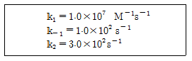
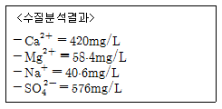
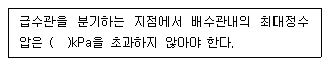
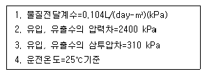
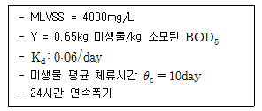
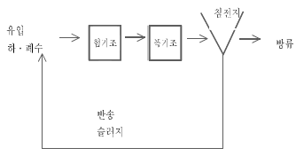
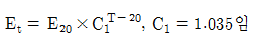
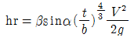

수질환경기사 (2006-03-05 기출문제)
1과목: 수질오염개론
1. 항구 내에서 기름유출에 의한 해양오염이 발생되었을 때 적용하기에 가장 부적당한 방법은?
- skimmer나 진공펌프를 이용한다.
- 연소시킨다.
- 흡수제를 이용하여 기름을 흡착시킨다.
- 유화제나 침전제를 사용한다.
(정답률: 30%)

2. BODu가 300mg/L 일 때 5일 후 잔존 BOD는? (단, 1차반응 기준, 탈산소계수 K(자연대수)는 0.1/day)
- 121mg/L
- 149mg/L
- 182mg/L
- 196mg/L
(정답률: 55%)
3. 어느 배양기(培養基)의 제한기질농도(S)가 200mg/L, 세포비증가율 최대치(μmax)가 0.23/hr일 때 Monod식에 의한 세포비증가치(μ)는? (단, 제한기질 반포화농도(Ks)는 30mg/L이다.)
- 0.⑤/hr
- 0.10/hr
- 0.20/hr
- 0.40/hr
(정답률: 53%)
4. 효소 및 기질이 효소-기질을 형성하는 가역반응과 생성물 P를 이탈시키는 착화합물의 비가역 분해과정인 다음의 식에서 Michaelis 상수 Km은?

- 1.0×10-5M
- 2.0×10-5M
- 3.0×10-5M
- 4.0×10-5M
(정답률: 알수없음)
5. Glucose 300mg/L가 완전 산화하는데 필요한 이론적 산소요구량은?
- 310mg/L
- 320mg/L
- 330mg/L
- 340mg/L
(정답률: 43%)
6. 유해물질과 배출원, 유해내용이 가장 알맞게 짝지어진 것은?
- 카드뮴 - 전해소다공장, 농약공장 - 수족의 지각장애
- 수은 - 금속광산, 정련공장, 원자로 - 동요성 보행
- 납 - 합금, 도금, 제련 - 피부궤양
- 망간 - 광산, 합금, 유리착색 - 파킨스병 유사 증세
(정답률: 알수없음)
7. 다음 중 확산계수가 가장 큰 것은?
- 수평방향 지표수
- 호수의 수온 약층
- 수중의 염류와 기체
- 침전물중의 이온용질
(정답률: 알수없음)
8. 수분함량 95%의 슬러지에 응집제를 가하니 상등액과 침전슬러지 용적비가 2:1로 되었다. 이때 침전슬러지의 수분함량은? (단, 응집제의 양은 무시, 상등액은 고형물이 없음)
- 90%
- 85%
- 80%
- 75%
(정답률: 알수없음)
9. 자정계수(f)에 대한 일반적 설명으로 틀린 것은?
- 수심이 깊어지면 자정계수는 커진다.
- 자정계수는 [재폭기계수/탈산소계수]이다.
- 유속이 빨라지면 자정계수는 커진다.
- 구배가 크면 자정계수는 커진다.
(정답률: 25%)
10. 알칼리도에 관한 설명으로 틀린 것은?
- 유발물질 중 자연수의 경우 CO3-2에 의한 알칼리도가 지배적이다.
- 총경도가 알칼리도보다 큰 경우는 알칼리도와 탄산경도는 같다.
- 산을 중화할 수 있는 완충능력, 즉 수중에 존재하는[H+]을 중화시키기 위하여 반응할 수 있는 이온의 총량을 말한다.
- 알칼리도 자료는 부식제어에 관련되는 중요한 변수인 Langelier 포화지수 계산에 이용된다.
(정답률: 54%)
11. 해수에 관한 다음의 설명 중 옳은 것은?
- 중요한 화학적 성분 7가지는 Cl-, Na+, Mg2+, N, P, K+, Ca2+이다.
- pH는 약 7.2로 중성을 나타낸다.
- 해수의 Mg/Ca 비는 담수보다 크다.
- 해수의 밀도는 수심이 깊을수록 염농도가 감소함에 따라 작아진다.
(정답률: 40%)
12. 이상적인 완전혼합 흐름상태를 나타내는 반응조 혼합정도의 표시로 알맞지 않는 것은?
- 분산이 1일 때
- 지체시간이 0일 때
- Morill 지수가 1에 가까울수록
- 분산수가 무한대일 때
(정답률: 알수없음)
13. 확산을 지배하는 기본법칙인 Fick의 제 1법칙을 가장 알맞게 설명한 것은? (단, 확산에 의해 어떤 면적요소를 통과하는 물질의 이동속도 기준)
- 이동속도는 확산물질의 조성비에 비례한다.
- 이동속도는 확산물질의 농도경사에 비례한다.
- 이동속도는 확산물질의 분자확산계수와 반비례한다.
- 이동속도는 확산물질의 유입과 유출의 차이만큼 축적된다.
(정답률: 알수없음)
14. 유량 30,000m3/day, BOD 1mg/L인 하천에 유량 100m3/hr, BOD 220mg/L의 생활오수가 처리되지 않고 유입되고 있다. 하천수와 처리수가 합류 직후 완전혼합된다고 가정할 때, 하천의 BOD를 1mg/L로 유지하기 위해서 필요한 오수의 BOD 제거율(%)은?
- 94.2
- 96.4
- 98.4
- 99.5
(정답률: 27%)
15. 공중 위생상 중요한 방사능 물질인 스트론튬(Sr90)은 29년의 반감기를 가지고 있다. 주어진 량의 스트론튬을 90% 감소시키기 위해서는 얼마만큼의 기간동안 저장해야 하는가? (단, 1차반응 기준)
- 약 37년
- 약 67년
- 약 97년
- 약 113년
(정답률: 31%)
16. 수질분석결과가 다음과 같다. 이 시료의 총경도(as CaCO3)의 값은? (단, Ca=40, Mg=24, Na=23, S=32)

- 1,293mg/L
- 1,343mg/L
- 1,462mg/L
- 1,512mg/L
(정답률: 19%)
17. 봄과 가을에 순간적 급성장을 보여 호수의 성층현상과 관련 있는 것으로 판단되는 조류로 보통 단세포이며 드물게 군락을 이루고 있는 경우가 있으며 초기 지질시대에 호수에 번성하여 축적된 잔해가 가끔 거대한 퇴적층을 형성하기도 하는 것으로 가장 적절한 것은?
- 청-록조류
- 녹조류
- 규조류
- 적조류
(정답률: 알수없음)
18. Ca(OH)2 400mg/L 용액의 pH는? (단, Ca(OH)2는 완전해리, Ca 분자량 : 40)
- 11.3
- 11.7
- 12.0
- 12.3
(정답률: 알수없음)
19. 금속수산화물 M(OH)2의 용해도적(Ksp)이 4.0×10-9이면 용해도는 몇 g/L인가? (단, M은 2가, M(OH)2의 분자량은 60이라 가정함.)
- 0.06
- 0.08
- 0.1
- 0.12
(정답률: 50%)
20. 다음 중 호수의 수질관리를 위하여 일반적으로 사용할 수 있는 예측모형과 가장 거리가 먼 것은?
- WASP5 모델
- WQRRS 모델
- POM 모델
- Vollenweider 모델
(정답률: 64%)
2과목: 상하수도계획
21. 상수처리를 위한 완속여과지에 관한 설명으로 틀린 것은?
- 여과지의 깊이는 하부집수장치의 높이에 자갈층 두께, 모래층 두께, 모래면 위의 수심과 여유고를 더하여 2.5～3.5m를 표준으로 한다.
- 여과속도는 4～5m/일을 표준으로 한다.
- 모래층의 두께는 70～90cm를 표준으로 한다.
- 여과지의 모래면 위의 수심은 30～60cm를 표준으로 한다.
(정답률: 알수없음)
22. 호소, 댐을 수원으로 하는 경우 ‘취수문’에 관한 설명과 가장 거리가 먼 것은?
- 일반적으로 대량취수에 쓰인다.
- 비교적 수위변동이 적은 호수 등에 적합하다.
- 수심 상황에 따른 취수의 영향이 거의 없다.
- 갈수기에 호소에 유입되는 수량 이하로 취수할 계획이면 안정 취수가 가능하다.
(정답률: 알수없음)
23. 상수관로에서 조도계수 0.014, 동수경사 1/100 이고, 관경이 400mm일 때 이 관로의 유량은? (단, 만관기준, Manning 공식에 의함)
- 약 0.08 m3/sec
- 약 0.12 m3/sec
- 약 0.15 m3/sec
- 약 0.19 m3/sec
(정답률: 25%)
24. 배수시설인 배수관의 수압에 대한 다음 설명 중 ( )안에 알맞은 내용은?

- 1000
- 900
- 800
- 700
(정답률: 36%)
25. 펌프의 공동현상(cavitation)을 방지하기 위한 대책과 가장 거리가 먼 것은?
- 펌프의 설치위치를 가능한 한 낮추어 가용유효흡입수두를 크게 한다.
- 흡입관의 손실을 가능한 한 작게 하여 가용유효흡입수두를 크게 한다.
- 펌프의 회전속도를 낮게 선정하여 필요유효흡입수두를 크게 한다.
- 흡입측 밸브를 완전히 개방하고 펌프를 운전한다.
(정답률: 31%)
26. 상수시설 중 배수지에 관한 설명 중 옳지 않은 것은?
- 유효용량은 시간변동조정용량, 비상대처용량을 합하여 급수구역의 계획 1일 최대급수량의 12시간분 이상을 표준으로 한다.
- 부득이한 경우 외에는 배수지를 급수지역의 중앙 가까이에 설치한다.
- 유효수심은 2～3m를 표준으로 한다.
- 자연유하식 배수지의 표고는 최소동수압이 확보되는 높이여야 한다.
(정답률: 60%)
27. 토출량 1.15m3/sec, 흡입구의 유속 3m/sec인 경우 펌프의 흡입구경은 몇 cm인가?
- 30
- 50
- 70
- 90
(정답률: 40%)
28. 폭이 6m, 깊이 4m인 장방형 개수로에 2m 수심으로 물이 송수된다면 경심은?
- 1.2m
- 1.5m
- 2.0m
- 2.5m
(정답률: 39%)
29. 하수도 관거의 접합방법 중 굴착깊이를 얕게 함으로 공사비를 줄일 수 있으며 수위상승을 방지하고 양정고를 줄일 수 있어 펌프로 배수하는 지역에 적합하나 상류부에서는 동수경사선이 관정보다 높이 올라갈 우려가 있는 것은?
- 수면접합
- 관정접합
- 중심접합
- 관저접합
(정답률: 19%)
30. 하수도 시설 기준상 축류펌프의 비교회전도(Ns)로 적절한 것은?
- 100~250
- 350~550
- 650~1000
- 1100~2000
(정답률: 알수없음)
31. 하수의 배제방식 중 합류식에 관한 설명으로 틀린 것은?
- 관거 내의 보수 : 폐쇄의 염려가 없다.
- 토지이용 : 기존의 측구를 폐지할 경우는 도로폭을 유효하게 이용할 수 있다.
- 관거오접 : 철저한 감시가 필요하다.
- 시공 : 대구경관거가 되면 좁은 도로에서의 배설에 어려움이 있다.
(정답률: 30%)
32. 상수도 시설 중 원수를 취수지점으로부터 정수장까지 끌어들이는 시설은?
- 배수시설
- 급수시설
- 도수시설
- 송수시설
(정답률: 37%)
33. 펌프의 규정 토출량이 12m3/min, 규정양정 8m, 규정회전수 1200회/분인 경우 이 펌프의 비교회전도는?
- 692
- 765
- 874
- 917
(정답률: 알수없음)
34. 강우강도 I=[3970/(t+31)]mm/hr, 유역면적 4㎢, 유입시간 5분, 유출계수 0.45, 길이 1km 하수관내 유속 40m/min인 경우 하수관 하단의 최대 우수량은? (단, 합리식 적용)
- 83m3/sec
- 65m3/sec
- 48m3/sec
- 33m3/sec
(정답률: 알수없음)
35. 상수처리를 위한 생물처리설비 중 회전원판장치에 관한 설명으로 틀린 것은?
- 접촉지의 용량은 액량면적비로 결정한다.
- 처리계열은 2개월 이상으로 하고 각 계열은 2개 이상의 접촉지를 직렬로 배치한다.
- 회전원판의 주변속도는 15~20m/min을 표준으로 한다.
- 접촉지의 내벽과 원판 끝부분과의 간격은 원판직경의 5~10%를 표준으로 한다.
(정답률: 알수없음)
36. 해수담수화시설 중 역삼투설비에 관한 설명으로 틀린 것은?
- 생산된 물은 pH나 경도가 높기 때문에 필요에 따라 적절한 약품을 주입하여 수질을 조정한다.
- 막모듈은 플러싱과 약품세척 등을 조합하여 세척한다.
- 장기간 운전중지하는 경우에 막보전액으로는 중아황산나트륨 등을 사용한다.
- 공급수 중의 이물질로 고압펌프와 막모듈이 손상되지 않도록 하기 위하여 고압펌프의 흡입측 공급수 배관계봉에 안전필터를 설치한다.
(정답률: 알수없음)
37. 계획취수량의 기준이 되는 급수량은?
- 계획 1일 평균 급수량
- 계획 1일 최대 급수량
- 계획 시간 평균 급수량
- 계획 시간 최대 급수량
(정답률: 10%)
38. 지하수 취수시 적용되는 ‘적정양수량’의 정의로 가장 알맞은 것은?
- 최대양수량의 70% 이하의 양수량
- 한계양수량의 70% 이하의 양수량
- 안전양수량의 70% 이하의 양수량
- 계획양수량의 70% 이하의 양수량
(정답률: 알수없음)
39. 계획취수량을 확보하기 위하여 필요한 저수용량의 결정에 사용되는 계획기준년에 관한 내용으로 가장 알맞은 것은?
- 원칙적으로 5개년에 제1위 정도의 갈수를 표준으로 한다.
- 원칙적으로 7개년에 제1위 정도의 갈수를 표준으로 한다.
- 원칙적으로 10개년에 제1위 정도의 갈수를 표준으로 한다.
- 원칙적으로 15개년에 제1위 정도의 갈수를 표준으로 한다.
(정답률: 36%)
40. 설치조건에 따른 하수도 펌프종류 선택이 적절치 못한 것은?
- 침수의 위험이 있는 곳 : 입축형 펌프
- 전양정이 4m 이상, 구경 80mm 이상 : 원심펌프
- 전양정이 5m 이하, 구경 400mm 이상 : 축류펌프
- 전양정이 10m 이상, 구경 600mm 이상 : 사류펌프
(정답률: 46%)
3과목: 수질오염방지기술
41. 수중의 암모니아성질소(NH3-N) 탈기법(air-stripping)에 관한 설명과 가장 거리가 먼 것은?
- 암모니아성 질소를 pH 10 이상에서 암모니아 가스로 탈기시킨다.
- 기온이 상승할수록 같은 양의 폐수를 처리하는데 필요한 공기의 양은 감소한다.
- 동절기에는 제거효율이 현저히 저하되어 적용하기 곤란하다.
- 탈기시 이산화탄소(CO2)와 암모니아 가스가 동시에 제거된다.
(정답률: 29%)
42. 회전원판생물막 접촉기(RBC)에 관한 설명으로 틀린 것은?
- 활성슬러지 시스템에서 필요한 에너지의 1/3~1/2의 에너지가 필요하다.
- 유입수는 침전을 거치거나 적어도 스크린 시설을 거쳐야 한다.
- 막의 두께를 감소시키기 위해 원판의 회전속도를 증가시켜 전단력을 작게 하는 방법이 사용된다.
- 메디아는 전형적으로 약 40%가 물에 잠기며 미생물이 여재 위에 부착성장함에 따라 막은 액체 내에서 전단력을 증가시킨다.
(정답률: 알수없음)
43. 일반적인 수은계 폐수처리방법과 가장 거리가 먼 것은?
- 수산화물침전법
- 흡착법
- 이온교환법
- 황화물침전법
(정답률: 62%)
44. 역삼투 막분리방법에 관한 내용과 가장 거리가 먼 것은?
- 셀룰로오스 아세테이트로 만든 막이 널리 사용되며 비교적 단단하다.
- 구동력은 정수압차이다.
- 기본장치에 부착된 기계의 주요형태는 관형, 궁공사형, 나선구조형으로 분류된다.
- 분리형태는 체걸음으로 주로 전자공업의 초순수제조에 사용된다.
(정답률: 알수없음)
45. 폐활성슬러지를 부상농축조를 이용하여 농축시키고자 한다. 하루에 처리되는 슬러지의 부피는 125m3/day이고, 이 슬러지의 부유물질농도는 1.6%이다. 만약 고형물 부하량이 10kg/m2∙hr이고 하루 가동시간은 6시간이라고 한다면 필요한 농축조의 수면적(surface area)은? (단, 슬러지 비중은 1.0으로 가정함)
- 7.5m2
- 16.7m2
- 28.4m2
- 33.3m2
(정답률: 9%)
46. 역삼투법으로 하루에 1520m3의 3차 처리 유출수를 탈염하기 위하여 요구되는 막의 면적(m2)은?

- 약 5500
- 약 7000
- 약 8500
- 약 9000
(정답률: 16%)
47. 흡착 공정에 사용되는 활성탄에 대한 설명 중 옳지 않은 것은?
- 분말 활성탄과 입상 활성탄의 흡착력에 차이가 없으나 분말 활성탄의 입경이 작을수록 평형은 입상활성탄보다 더 빨리 도달된다.
- 사용된 활성탄은 화학적 또는 열적으로 재생이 가능하다.
- 활성탄은 트리할로메탄 등의 유기화합물질은 충분히 제거하나 독성금속 등 무기오염물질 제거에는 비효율적이다.
- 상업용 입상 활성탄의 표면적은 600!1600m2/g 정도이다.
(정답률: 19%)
48. 용해성 BOD5가 250mg/L인 유기성 폐수가 완전혼합 활성슬러지 공정으로 처리된다. 유출수의 용해성 BOD5는 7.4mg/L이다. 유량이 18,925m3/day일 때 포기조 용적은?

- 3,330m3
- 4,663m3
- 5,330m3
- 6,270m3
(정답률: 알수없음)
49. 어떤 물질이 1차 반응으로 분해된다. 제거율을 50%, 90%로 할 때, 각각의 필요한 CSTR과 PFR의 부피의 비율(CSTR/PFR)로 적절한 것은?(단, 기타 속도상수, 유량 등의 조건은 같다.)
- 1.44, 3.91
- 1.68, 2.42
- 1.82, 3.29
- 1.86, 2.52
(정답률: 27%)
50. 유량이 2000m3/day이고 SS 농도가 250mg/L인 폐수를 가압반송시스템에 의한 부상처리하기 위하여 공기부상실험을 한 결과 최적부상의 A/S비는 0.08이었고, 실험온도는 20℃이고 공기용해도는 18.7mL/L, 공기흡수분율은 0.5이고, 운전압력이 3.5atm일 때 반송률(%)은? (단, 순환방식 기준, 20℃ 기준)
- 150
- 130
- 110
- 85
(정답률: 31%)
51. Chick's law에 의하면 염소소독에 의한 미생물 사멸율은 1차 반응에 따른다고 한다. 미생물의 80%가 0.1mg/L 잔류염소로 2분 내에 사멸된다면 99%를 사멸시키기 위해서 요구되는 접촉시간은?
- 13.1분
- 8.6분
- 5.7분
- 3.2분
(정답률: 24%)
52. 펜턴(Fenton)산화법의 설명으로 거리가 먼 것은?
- 화학적 산화법의 일종이다.
- 펜턴시약으로부터 발생하는 OH라디칼을 이용하는 처리법이다.
- 난분해성 유기물의 산화처리에 이용된다.
- 차아염소산나트륨과 철염의 반응을 주반응으로 하여 폐수를 처리한다.
(정답률: 알수없음)
53. 급속여상의 국부 공극률이 0.40이고, 표면부하율을 475m/day로 운전할 때 속도수두[atm]는? (단, p : 1000kg/m3, latm=101.3×103kg/mㆍs2)
- 9.3×10-7atm
- 8.3.×10-7atm
- 7.3×10-7atm
- 6.3×10-7atm
(정답률: 17%)
54. 건조된 슬러지 무게의 1/3이 유기물질, 2/3가 무기물질이며 건조전 슬러지 함수율은 80%, 유기물질 비중은 1.0, 무기물질 비중은 2.5라면 건조전 슬러지 전체의 비중은?
- 1.31
- 1.22
- 1.15
- 1.09
(정답률: 알수없음)
55. 다음의 그림은 생물학적 3차 처리를 위한 A/O 공정을 나타낸 것이다. 상기의 각 반응조 역할을 가장 적절하게 설명한 것은?

- 혐기조에서는 유기물 제거와 인의 방출이 일어나고 폭기조에서는 인의 과잉섭취가 일어난다.
- 폭기조에서는 유기물 제거가 일어나고 혐기조에서는 질산화 및 탈질이 동시에 일어난다.
- 제거율을 높이기 위해서는 외부탄소원인 메탄올 등을 폭기조에 필요에 따라 간헐적으로 주입한다.
- 혐기조에서는 인의 과잉섭취가 일어나며 폭기조에서는 질산화가 일어난다.
(정답률: 55%)
56. 브롬화염소에 의한 살균에 관한 설명으로 적절치 않는 것은?
- 브롬화염소는 기화속도가 낮기 때문에 염소보다 덜 유해하다.
- 부식성이 높아 염소와 관련된 배관이나 용기에 철제를 쓸 수 없다.
- 하수의 살균제로 쓰일 때 브롬화염소는 액화기체로서 주입된다.
- 브롬화염소잔류량은 접촉조안에서 빨리 감소하므로 주입지점에서 하수와 잘 섞어줄 필요가 있다.
(정답률: 34%)
57. 정수장의 물이 상류에서 하류로 방류될 때 수리학적 안정성을 판단하는 지표로 가장 알맞은 것은? (단, 중력흐름이 준임계인지 초임계인지를 규정함)
- Froude 수
- Schmidt 수
- Prandtl 수
- Rossby 수
(정답률: 알수없음)
58. BOD 250mg/L인 폐수를 살수여상법으로 처리할 때 처리수의 BOD는 40mg/L이었고 이때의 온도가 20℃였다. 만일 온도가 23℃로 된다면 처리수의 BOD 농도는? (단, 온도 이외의 처리조건은 같고, E : 처리효율,

)- 약 17 mg/L
- 약 21 mg/L
- 약 25 mg/L
- 약 33 mg/L
(정답률: 알수없음)
59. 수면에 대한 스크린 설치 경사각이 60°, 스크린의 막대 굵기 2cm, 스크린의 유효간격이 22mm, 폐수의 유속이 0.45m/sec, 스크린의 막대단면 모습에 따른 계수가 3.5일 때 스크린 설치에 따른 수두손실은? (단,

)- 약 0.021m
- 약 0.028m
- 약 0.032m
- 약 0.039m
(정답률: 알수없음)
60. 다음 중 생물학적 원리를 이용하여 하수 내 질소를 제거(3차 처리)하기 위한 공정으로 가장 거리가 먼 것은?
- SBR 공정
- UCT 공정
- A/O 공정
- Bardenpho 공정
(정답률: 알수없음)
4과목: 수질오염공정시험기준
61. 유기물을 다량 함유하고 있으면서 산화분해가 어려운 시료에 적용되는 전처리 방법으로 가장 적절한 것은?
- 질산에 의한 분해
- 질산ㆍ염산에 의한 분해
- 질산ㆍ황산에 의한 분해
- 질산ㆍ과염소산에 의한 분해
(정답률: 알수없음)
62. 윙클러-아지드화나트륨 변법을 적용하여 DO측정 시 시료 내에 Fe(Ⅲ)가 100～200mg/L가 함유되어 측정이 방해받는 경우 전처리 방법으로 황산의 첨가 전 주입하여야 하는 시약으로 적절한 것은?
- 과망간산칼륨용액
- 불화칼륨용액
- 요오드화칼륨용액
- 수산화나트륨용액
(정답률: 31%)
63. 황산산성에서 과요오드산 칼륨으로 산화하여 생성된 이온을 흡광도 525nm에서 측정하여 정량하는 금속은?
- Mn2+
- Ni2+
- Co2+
- Pb2+
(정답률: 48%)
64. pH 표준액의 온도보정은 온도별 표준액의 pH값을 표에서 구하고 또한 표에 없는 온도의 pH값은 내삽법으로 구한다. 다음 중 20℃에서 가장 낮은 pH값을 나타내는 표준액은?
- 붕산염 표준액
- 프탈산염 표준액
- 탄산염 표준액
- 인산염 표준액
(정답률: 알수없음)
65. 어떤 공장 배수의 유량을 측정하기 위하여 파아샬플루움을 설치하였다. 파아샬플루움의 목의 폭 W=15.2cm이고, 경험에 의한 유량측정공식은 Q=0.264Ha1.58이다. 상류부의 수위가 10cm라면 유량은?
- 10 m3/min
- 10 ℓ/sec
- 60 m3/min
- 60 ℓ/sec
(정답률: 알수없음)
66. 수심 2m, 폭 6m인 장방형 수로에 유속 0.8m/sec로 폐수를 흘러 보내려고 할 때 최소 수로 바닥 구배(‰)는? (단, chezy 공식 적용, 유속계수 C = 20이다.)
- 1.11
- 1.33
- 1.66
- 1.99
(정답률: 54%)
67. 흡광광도계를 이용한 철의 정량에 관한 내용 중 알맞지 않은 것은?
- 등적색 철착염의 흡광도를 측정하여 정량한다.
- 측정파장은 510nm이고, 정량범위는 0.02~0.5mg이다.
- 염산히드록실아민에 의해 산화제이철로 산화된다.
- 철이온을 암모니아 알칼리성으로 하여 수산화제이철로 침전분리한다.
(정답률: 알수없음)
68. 전기전도도의 측정치를 나타내는 표시와 가장 거리가 먼 것은?
- μmhos/cm
- ohms/cm
- mS/m
- μS/cm
(정답률: 알수없음)
69. 다음 설명 중에서 틀린 것은?
- ‘정확히 단다’라 함은 규정된 양의 검체를 취하여 분석용 저울로 0.1mg까지 다는 것을 말한다.
- ‘항량으로 될 때까지 건조한다’라 함은 같은 조건에서 1시간 더 건조하였을 때 전후무게차가 g당 0.3mg 이하일 때를 말한다.
- ‘정량범위’라 함은 지정된 시험방법에 따라 시험할 경우, 표준편차율 10%이하에서 측정할 수 있는 정량하한과 정량상한의 범위를 말한다.
- ‘표준편차율’이라 함은 표준편차의 백분율로서 반복조작시의 편차를 나타낸 것을 말한다.
(정답률: 알수없음)
70. 시료 보존용기를 유리용기만으로 사용해야 하는 항목은?
- 암모니아성질소
- 페놀류
- 불소
- 시안
(정답률: 알수없음)
71. 시료의 보존방법이 다른 측정항목은?
- 화학적산소요구량
- 질산성질소
- 암모니아성질소
- 총질소
(정답률: 10%)
72. 인산염 인 표준용액(0.1mgPO4-P/mL) 500mL를 조제하기 위해 필요한 인산2수소칼륨(KH2PO4)의 양(g)은? (단 KH2PO4 분자량 = 136, 인(P)의 원자량=31)
- 0.08
- 0.11
- 0.22
- 0.44
(정답률: 9%)
73. 총대장균군 시험에 대한 설명 중 옳지 않은 것은?
- 시료 중 잔류염소가 함유되었을 때는 멸균된 10% 티오황산나트륨용액으로 제거한다.
- 최적확수 시험법은 추정시험, 확정시험 및 완전시험의 3단계로 나눈다.
- 최적확수란 확률적인 수치로 결과는 총대장균군수/100mL 의 단위로 표시한다.
- 시료의 균질화를 위해 고형물이 포함된 시료는 강하게 진탕후 여과하여 사용한다.
(정답률: 19%)
74. 폐수 중의 부유물질(SS)을 측정하기 위하여 다음과 같은 결과를 얻었다. 이 결과로부터 시료 여과 후 여과지의 무게는? (단, 결과 : 시료량 200mL, 여과 전 여과지 무게 : 1.9912g, 시료의 SS : 124mg/L)
- 2.0060g
- 2.0160g
- 2.1160g
- 2.2540g
(정답률: 24%)
75. 수질오염공정시험방법상 총질소 분석방법과 가장 거리가 먼 것은?
- 흡광광도법
- 카드뮴 환원법
- 가스크로마토그래피법
- 환원증류-킬달법
(정답률: 알수없음)
76. 총질소의 전처리에서 시료를 분해병에 넣고 알칼리성과황산칼륨용액을 주입 후 고압증기멸균기에 넣고 가열 분해하는데 소요되는 시간은?
- 약 150℃가 될 때부터 1시간
- 약 150℃가 될 때부터 30분
- 약 120℃가 될 때부터 1시간
- 약 120℃가 될 때부터 30분
(정답률: 알수없음)
77. 이온전극법에 관한 설명으로 틀린 것은?
- 이온농도의 측정범위는 일반적으로 10-1mol/ℓ~10-4mol/ℓ(또는 10-7mol/ℓ)이다.
- 측정용액의 온도가 1℃상승하면 전위구배는 1~2mV가 변화한다.
- 시료용액의 교반은 이온전극의 전극범위, 응답속도, 정량한계값에 영향을 나타낸다.
- 이온의 활량계수는 이온강도의 영향을 받기 때문에 용액중의 이온강도를 일정하게 유지해야 할 필요가 있다.
(정답률: 15%)
78. 하천수의 시료채취에 관한 내용으로 가장 적절한 것은?(단, 수심은 1.5m 이다.)
- 하천 단면에서 수심이 가장 깊은 수면의 지점과 그지점 중심으로 좌우로 수면폭을 3등분한 각각의 지점의 수면으로부터 수심의 1/3 지점을 채수한다.
- 하천 단면에서 수심이 가장 깊은 수면의 지점과 그 지점 중심으로 좌우로 수면폭을 3등분한 각각의 지점의 수면으로부터 수심의 1/2 지점을 채수한다.
- 하천 단면에서 수심이 가장 깊은 수면이 지점과 그 지점 중심으로 좌우로 수면폭을 2등분한 각각의 지점의 수면으로부터 수심의 1/3 지점을 채수한다.
- 하천 단면에서 수심이 가장 깊은 수면의 지점과 그 지점 중심으로 좌우로 수면폭을 2등분한 각각의 지점의 수면으로부터 수심의 1/2 지점을 채수한다.
(정답률: 알수없음)
79. 이온 전극에 의한 폐수중의 불소 분석에 관한 설명 중 맞는 것은?
- 시료와 표준액의 측정시 온도차는 ±5℃이어야 한다.
- 시료에 이온강도 조절용 완충액을 넣어 pH를 약 6.5~7.5로 조절하여 측정한다.
- 정량범위는 0.1~100mgㆍF-/L이고 표준편차는 20～5%이다.
- 교반은 기포가 최대한 발생하도록 강하게 하여야 한다.
(정답률: 알수없음)
80. 수질오염공정시험방법상 ‘암모니아성질소’ 측정 방법으로 옳지 않은 것은?
- 흡광광도법
- 중화적정법
- 이온전극법
- 이온크로마토그래피법
(정답률: 40%)
5과목: 수질환경관계법규
81. 1년 6개월 동안 방류수 수질기준을 초과하지 아니한 사업자에게 기본배출부과금 100만원이 부과된 경우 감경 금액은?
- 30만원
- 40만원
- 50만원
- 60만원
(정답률: 알수없음)
82. 다음의 위임업무보고사항 중 보고횟수가 다른 것은?
- 기타수질오염원 현황
- 환경기술인의 자격별, 업종별 신고상황
- 폐수처리업에 대한 등록, 지도단속실적 및 처리실적현황
- 과징금 징수실적 및 체납처분 현황
(정답률: 6%)
83. 폐수수탁처리업에서 사용하는 폐수운반차량에 관한 설명으로 틀린 것은?
- 청색으로 도장한다.
- 차량 양측면과 후면에 ‘폐수운반차량’, ‘회사명’, ‘허가번호’, ‘전화번호 및 용량’을 표시하여야 한다.
- 차량에 표시는 흰색바탕에 황색글씨로 한다.
- 운송시 안전을 위한 보호구, 중화제 및 소화기를 비치하여야 한다.
(정답률: 알수없음)
84. 폐수무방류배출시설의 운영일지의 보존기간은?
- 최종기재 한 날부터 6월
- 최종기재 한 날부터 1년
- 최종기재 한 날부터 2년
- 최종기재 한 날부터 3년
(정답률: 24%)
85. 다음 중 특정수질유해물질이 아닌 것은?
- 구리 및 그 화합물
- 셀레늄 및 그 화합물
- 플루오르 화합물
- 테트라클로로에틸렌
(정답률: 10%)
86. 시장ㆍ군수ㆍ구청장이 낚시금지구역 또는 낚시제한구역을 지정하고자 하는 경우 누구와 협의하여야 하는가?
- 시ㆍ군ㆍ구 의회
- 환경부장관
- 시ㆍ도지사
- 수면관리자
(정답률: 20%)
87. 시ㆍ도지사가 “기타 수질오염원”의 개선명령을 하는 때에 개선의 이행기간 기준은?
- 6개월 이내
- 12개월 이내
- 18개월 이내
- 24개월 이내
(정답률: 알수없음)
88. 1일 폐수배출량이 2,000m3 미만일 경우 청정지역에서의 부유물질 배출허용기준은?
- 10mg/L 이하
- 20mg/L 이하
- 30mg/L 이하
- 40mg/L 이하
(정답률: 17%)
89. 공공수역에 특정수질유해물질을 누출, 유출시키거나 버린 자에 대한 벌칙기준은?
- 5년 이하의 징역 또는 3천만원 이하의 벌금
- 3년 이하의 징역 또는 1천5백만원 이하의 벌금
- 2년 이하의 징역 또는 1천만원 이하의 벌금
- 1년 이하의 징역 또는 5백만원 이하의 벌금
(정답률: 24%)
90. 방류수 수질기준을 초과한 경우 부과되는 부과계수와 초과율별간을 바르게 짝지어진 것은?
- 10% 이상 20% 미만 : 1.4
- 30% 이상 40% 미만 : 1.8
- 60% 이상 70% 미만 : 2.2
- 80% 이상 90% 미만 : 2.8
(정답률: 알수없음)
91. 배출시설에서 배출하는 폐수를 최종 방류구로 방류하기 전에 재이용하는 사업자에 대하여 폐수재이용율별 부과금 감면율에 따른 당해 부과기간에 부과되는 부과금의 감경기준으로 맞는 것은?
- 재이용률이 10% 이상 30% 미만인 경우 : 100분의 30
- 재이용률이 30% 이상 60% 미만인 경우 : 100분의 60
- 재이용률이 60% 이상 90% 미만인 경우 : 100분의 60
- 재이용률이 90% 이상인 경우 : 100분의 90
(정답률: 40%)
92. [시도지사는 지정호소수질보전계획을 당해 지정호소 및 호소수질보전구역이 지정, 고시된 날부터 ( )이내에 수립하여야 한다.(최초수립시)] ( )안에 적절한 내용은?
- 6월
- 1년
- 1년 6월
- 2년
(정답률: 9%)
93. 골프장 안의 잔디 및 수목 등에 맹ㆍ고독성 농약을 사용할 경우 벌칙 기준은?
- 500만원이하 과태료
- 1000만원이하 과태료
- 1년이하의 징역 또는 500만원이하의 벌금
- 1년이하의 징역 또는 1000만원이하의 벌금다.
(정답률: 18%)
94. 하천 부유물질량(SS)의 환경기준으로 적절한 것은?(단, 상수원수 1급 기준)
- 5mg/L 이하
- 15mg/L 이하
- 25mg/L 이하
- 35mg/L 이하
(정답률: 40%)
95. 시도지사는 지정호소 및 호소수질보전구역이 지정 고시된 때에 방지대책을 기초로 하여 수면관리자와의 협의를 거쳐 몇 년마다 지정호소수질보전계획을 수립하여 환경부장관의 승인을 얻어야 하는가?(단, 최초수립이 아님)
- 3년
- 5년
- 7년
- 10년
(정답률: 14%)
96. 종말처리시설종류별 배수설비의 설치방법 및 구조기준과 가장 거리가 먼 내용은?
- 배수관의 관경은 내경 150mm이상으로 한다.
- 배수관은 오수관과 분리하여 오수가 혼합되지 아니하도록 한다.
- 유량계 및 각종 계량기 설치는 배수설비의 부대시설로 본다.
- 배수관 입구에는 유효간격 10mm 이하의 스크린을 설치한다.
(정답률: 10%)
97. 폐수처리업자의 준수사항으로 수탁한 폐수는 정당한 사유없이 몇 일 이상 보관할 수 없는가?
- 7일
- 10일
- 15일
- 30일
(정답률: 알수없음)
98. 수질 환경기준(하천)중 사람의 건강보호를 위한 전수역에서 각 성분별 환경기준으로서 맞는 것은?
- 카드뮴 : 0.1mg/L 이하
- 시안 : 검출되어서는 않됨
- 6가 크롬 : 0.5mg/L 이하
- 연(Pb) : 0.01mg/L 이하
(정답률: 28%)
99. 폐수처리업의 등록을 한 자에게 위탁처리할 수 있는 폐수의 배출량기준은? (단, 물리적ㆍ화학적 처리시설에 의해 처리가 가능한 폐수이며 배출시설의 설치를 제한할 수 있는 지역인 경우)
- 1일 50m3 이내
- 1일 30m3 이내
- 1일 20m3 이내
- 1일 10m3 이내
(정답률: 알수없음)
100. 수질오염 방지시설 중 화학적 처리시설에 해당되는 것은?
- 침전물 개량시설
- 혼합시설
- 응집시설
- 증류시설
(정답률: 20%)